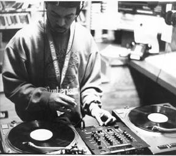

|
 |
" Several times in the last two years where there's been a very underground hip hop group, not from here but from New York, when they do the soundscan, sales wise, it always picks up in New York, it will pick up in Atlanta, it'll pick up in L.A., maybe Chicago, then all of the sudden, you'll see Durham, North Carolina spark up. It's not from commercial radio..." |
|
During the day I work for the Durham county government as a PC technician. That's
my real job. I've always been into music, though, especially hip hop of course, from
1979 when it first started. I continued to follow it, and when I was in college at NC
Central Unvirsity, my friend from high school roomed with me and he was a DJ at
home in Fayetville and I was always fascinated by it...So I bought [some turntables] and
that was in 93. And in 94, they were looking for new DJs, particularly urban DJs, and I
think Lisa Linn sent something out on the Internet to the hip hop newsgroup...May of
94 is when I started here as a regular DJ, and I just continued on. I was a little nervous
the first day. A friend of mine, another DJ here, DJ Madd, when we started to show,
before we got on the air, I was like, "Just say something, just say something, introduce
me or whatever," cause I didn't even want to talk on the air cause that was scary. But I
got used to it. Once you get a couple of shows in and people start calling in and
requesting songs, all that goes away.
I don't particularly like deejaying parties or clubs cause of the fact that in this area, as far as urban music is concerned, everything is geared towards 97.5, which is the commercial station around here. And because they have no competition, they only play a certain amount of songs...When you go to clubs, and you have all these records that you want to play, and you start playing stuff and they only want to hear what's been on the radio all day, then you end up playing a small amount of songs. Instead of going to a club to party and as long as the music is continually going, just to go and dance , they're conditioned to only dance to their favorite songs. Once they've listened to the station, we say over the air that this is college radio and we're not going to play as much of commercial songs. We play songs that become commercial hits earlier, and once it becomes a commercial hit, we'll continue with other things, instead of playing that song over and over and over like a commercial station does. We want them to listen to what's good, not what's popular. Because what's popular is not always good. Cause the music industry is driven by money, who has the most money. It's the same thing as other types of music: they have independent labels and they have major labels. They have people that are putting out their own stuff, locally on tapes or maybe they have a CD out...I’m in a record pool and we get stuff 2 or 3 weeks earlier than they get it in the stores and what I do is I take that music early and I listen to it and I say I think that might be a good song. And nobody knows it yet and I’ll play it and get feedback from it. What commercial radio does, what usually happens, is they don't start playing a song until it starts to sell and then they continue to play it. But, on the other side of that, an artist is from an independent label, and they could be really good, but they don't get the commercial play because it’s not selling and they're not making any money. So they either get dropped or go bankrupt. So they come to college radio and say "Listen, play mu song." Cause we’ll play it wether it's good or bad, we'll at least play it once or twice. If it's really bad, we'll say "Listen it's not very good." We might give them suggestions or whatever. Several times in the last two years where there's been a very underground hip hop group, not from here but from New York, when they do the soundscan, sales wise, it always picks up in New York, it will pick up in Atlanta, it'll pick up in L.A., maybe Chicago, then all of the sudden, you'll see Durham, North Carolina spark up. It's not from commercial radio, cause they don't play underground hip hop until it starts to sell...so we were right in the center of them selling maybe third or fourth in the whole country because we started playing the song. and we played it so much that people started buying it in Durham and Raleigh. So that's what we would like to do. We would like to have complete record companies look on their charts and say "Durham, we're getting sales in Durham. Why?" It's coming from us. And hopefully, what we're going to do once the tower goes up, we're gong to make them know that we're the ones that are making this happen in the area. Then, once that happens, people start to know that if we can get it to XDU, they will at least give us a chance...It makes me feel good when people start to request things that I know is good. There's not that many [hip hop slots]. Cause XYC doesn't have any, Shaw is jazz and talk, St. Aug’s doesn't have one. State has one, at night, but they play r&b. We even have a house show, a club show which is real popular in Chicago and New York. We also have a gogo show, which nobody has outside of XDU...We’re going to try to get a dance hall show too. Those are the other three genres of urban music aside from hip hop. We kind of leave the r&b alone because that's what the commercials play all the time. We don't want to play any slow, love-making music because every station, from 10-2 that's what you hear, so they don't need to hear it on this station. at least not while I'm the programming director. |
There's a lot of people that say about hip hop, that it's indecent, which it is, some of it.
That's like any other music. They have certain groups, they do that because that's what
sells... I think it's easier for us, for our station, if they know we’'re on for a certain time,
that we be on that whole block of time. For that way they know, if I want to listen to hip
hop, at 10 o'clock or 12 o'clock, I'm going to turn to 88.7 and I'll hear what I want to
hear... It's easy, just in case they want to slip in an indecent song.
We had a really good following. We didn't follow it up like we should have. We still didn't know quite for sure, whether we were making an effect. Over these last 7 months that we've been off the air, we've been getting calls almost every week asking when we're going to be back on the air. They're complaining about commercial radio and there's a lot of stuff that they would have missed that probably won't sell and they won't hear. When we gt back on the air, we’ll document everything that we do. We'll start putting our urban playlist in the record stores...if those songs start to sell more than usual, then we'll know that we're making a difference, because people are listening to the station and going out and buying them. Actually we get a pretty good following from the Duke community - the people that know there's a radio station. A lot of people have gone through here and don't even know that they have a radio station. It's hard to believe, but then maybe it's not. It just depends on what you listen to. They try to play a little bit of everything. That can be a positive or negative thing. I think particularly for what we're trying to do, it's fine if we have students as DJs. I think it's better that we have non-students as program directors or music directors. We've listened to hip hop a long time, we can kind of tell the trends that are coming and going. A person who just started listened to hip hop the last two years, only listened to one kind of hip hop and thinks that this is going to be lasting for a long time, which I can tell that it's not. so, they'll come out and do this kind of thing and then they'll leave and graduate and we've got to start over. So for me and James it's good, becuase we can sit and mold the program, and have DJ's come in and out but we’ll always have the program there. The reason why I like that is because this is the only place that you can get it. Cause if we had 3 or 4 other stations that were doing this, then it may not be that important cause you'll always have people coming in and out. But if this is the only place where you can get it for right now, I think it's better for us, at this station, to have it that way. I think what [XDU] is trying to do, I think they're trying to give alternatives. it's good that we have people who are not students because they've been here for a while and can offer help. There's pros and cons to both sides. If you have the same people here, you can get set in your ways also. As far as it fitting into the station, since the station is a variety of areas in music, I think we fit in. Because it doesn’t fit in. None of it fits in, so it fits in. I think at that point it fits in just as well as anything else. If local artists have it, we'll play it. We used to get quite of few of them coming through when we were up. We have them on the air and they play their music. A lot of them came to rap live, did battle on the air. That's a little iffy sometimes, because they don't know how to control their language when they're in the heat of the battle so we have to keep it to the people who we knew could control it. Duke seem to be very liberal anyway, as far as the students and their views. They seem to be pretty open, as long as you give them the same respect. If they don't like it, they don't like it and you don't have to like whatever they like either...fine. That's why we're in America. It's just music. You can take it serious to a point, but the fact of the matter is it's all a freedom. I think college radio is necessary...Commercial radio.... it's almost like a brainwashing thing. They train the listeners to only listen to those songs...But what about those other artists? The only way they can sell is if they go to college radio. A lot of them don't know that you can make money without any commercial play at all. You don't make millions of dollars, but you can have a record company call you and offer you a deal because you've already done that ground work, doing the sell without any commercial play, without a video, without stickers, without posters. You can go to the record company after that and say "I want this," instead of you sending a demo tape and them saying "we like it, we're going to give you this." There's a difference - you have the power instead of the record company having the power. So I think that's the big thing that college radio can do. They can give small artists the opporunity to get some air play so they can try to sell some records. There's more to hip hop than just guns and other things. The record companies push the negativity, more than they push the positivity. And they've got a lot of good positive rappers out there. Matter of fact, the best, the absolute pure hip hop, the best groups are positive. But, that's not pushed as much as the negative rappers. |